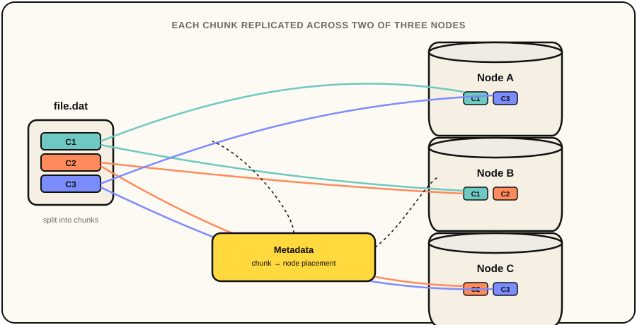
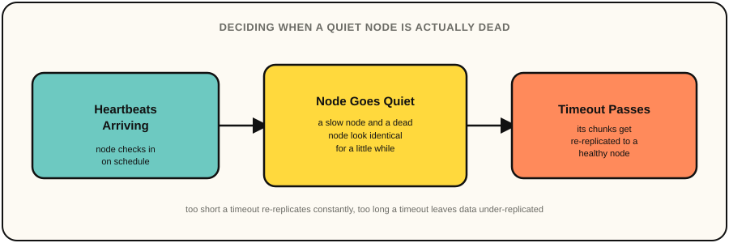

Distributed Filesystem
A distributed file storage layer with replication, fault tolerance, and consistent metadata management. I'm building it because I'm curious how distributed storage systems handle failure under the hood and to refine my foundational udnerstanding of fault tolerance.
This project is mainly inspired by the Distributed Systems class I took at Michigan, plus my day to day experience with distributed systems at Whova, things like Amazon's S3. I realized I only had a surface level understanding of concepts like CAP and sharding, and wanted to actually build something to understand them from the ground up.
The goal is to build a filesystem I'd eventually trust to store my own files on my own hardware. That's also what keeps me motivated to get the design right instead of cutting corners.
DistFS is built around a set of storage primitives. Files are chunked and spread across nodes, replicated so a single node failure doesn't lose data, and tracked in metadata that records which node holds which chunk. I started with this before touching anything like consensus, because I wanted the foundational data path to be solid before building coordination logic on top of it.

A lot of design decision I've made comes down to the same tradeoff. How much coordination do I pay for on writes so reads never come back stale after a node drops out? Goroutines and channels make the concurrency itself easy enough to reason about, but they don't make that tradeoff for you. That's still what I spend most of my time thinking about before writing any code.
Failure detection and re-replication are what I'm working through right now. A slow node and a dead node look identical for a bit, so the question is how fast to react without setting off a storm of re-replication every time something hiccups. Classic failure detector problem.
